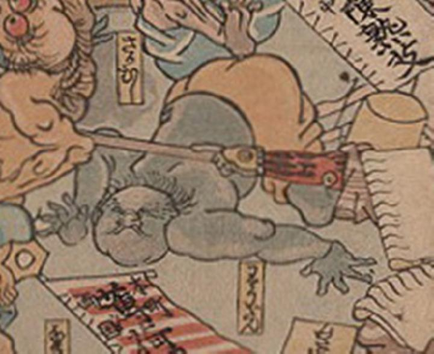

病気；ビョウキ，疫神；エキシン，流産；リュウザン

流産が擬人化した化物。肌は青黒く、肥えている。琥珀色の腰巻のみを着けて尻を上げ頭から地面に倒れ込んでいる。
著作者：歌川芳虎／出典：親書誌：U426_nichibunken_0012：諸病諸薬の戦い；ショビョウショヤクノタタカイ／日付：2006／資源識別子：U426_nichibunken_0012_0005_0000
Copyright (c)2010- International Research Center for Japanese Studies, Kyoto, Japan. All rights reserved.